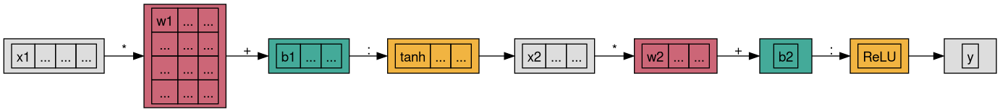
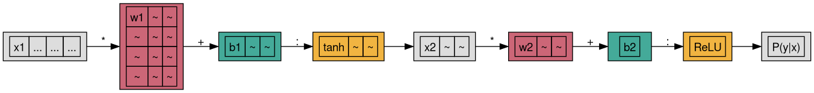

IVS group meeting
on my SKACH project(s)
2023/05/17 Wed - ZHAW
by
Philipp Denzel 
(Recap)
\begin{equation}
V_{pq} = \int_{4\pi} g_{p}(r)\ B(r)\ g^{\ast}_{q}(r) e^{-\frac{2\pi}{\lambda}\langle\vec{p}-\vec{q}, \vec{r}\rangle} \text{d}\Omega
\end{equation}
The infamous visibilities and "uv" plane
- As an inverse problem:
- \[V = \Psi^{\ast} B \Psi\]
- \[\tilde{B} = \tilde{\Psi} V \tilde{\Psi}^{\ast}\]
- Eigenvalue decomposition:
- \[\tilde{B} = \sum_{i} \lambda_{i} ||\Psi v_{i}||^{2}\]


Credit: E. Tolley (EPFL)
Dirty images

Figure 1: Credit: E. Tolley (EPFL)
Training data from simulations
Data formats
- point clouds (3D coordinates: x, y, z)
- lightcones (2D images + 1D time: θ, φ, frequency)
- visibilities (telescope data cubes using OSKAR)
- images (3D projections from visibilities and/or simulations)
Pix2Pix
- pix2pix by I. Phillipi (in lua torch)
- difference: W-GAN penalty (replace KL divergence with Wasserstein metric)
- limit discriminator to 1-Lipschitz function (learned)
- difference: W-GAN penalty (replace KL divergence with Wasserstein metric)
- pix2pix+cycleGAN by J.-Y. Zhu (in pytorch)
- blog post by Ch. Hesse (pix2pix vs. CycleGAN)


My development process
- Prepare the dataset & dataloader
- Test driven development (mantra: "Guilty until proven innocent!"):
- first write tests, then implement accordingly
- for existing code: write tests for modules, in order to understand
- UNet generators vs. ResNet generators
- PixelGAN vs. PatchGAN
ML4GLEAM project
- project idea by Michele Bianco (EPFL) & Philipp Denzel (ZHAW):
- classification engine for extragalactic sources, tested on the GLEAM survey

Figure 2: Credit: Wang et al. (2010)
- find help:
- Elena found an interested person, Michele still searching for EPFL student
- assists for paper: Mark Sargent (ISSI, Bern) & Anna Bonaldi (SKAO, Manchester)
GLEAM
test dataset
- image downloader: FITS files for each frequency band
- convert coordinate system of FITS files ZEA ⟶ ICRS
- get catalog for extragalactic source positions
training dataset
- check literature (more recent papers not yet found)
- Wang et al. (2010) section 2.3
- Jélic et al. (2008) section 4
- Gleser et al. (2008) section 4.2
- meeting with Mark Sargent (ISSI) & Anna Bonaldi (SKAO)
- get USHUU halo catalog (relevant redshifts?)
- apply models to halo catalog
- create lightcone (frequency evolution of radio sources)
- ⟶ target catalog (positions)
- use OSKAR/Karabo for mock observation and systematics
ML setup
- decide on task (classification, classification+localization)
- find architecture: any ideas?
- possibility of cross-referencing with other surveys
- i.e. include priors ⟶ Bayesian CNNs?
- explainability of the model is important (audience: astronomers)
Bayesian neural nets
Classically discrete

Going Bayesian

Ongoing work for SKA
Testing generative models for the SKA project:
- Adversarial models:
- CycleGAN
- Pix2pix
- Flow-based generative models
- Diffusion models
Data versioning: testing oxen against dvc
- on dataset: ImageNet (Winter 2021) with
zsh'stimemacro - on archlinux 6.2.10-arch1-1 / Intel i7-7700K / 64 GB DDR3 / ext4 / SATA: 6GB/s & 256 MB Cache
| cmd | dvc timing [s] @ CPU | oxen timing [s] @ CPU |
|---|---|---|
| init | 1.8 @ 68% | 3.6 @ 12% |
| add | 98384.0 @ 48% | 35331.8 @ 50% |
| commit | 81091.1 @ 27% | 58425.7 @ 16% |
| push | nil | nil |
- My opinion:
oxenis simple, and all I am looking foroxenis faster, but only marginally in practicedvcintegrates more features (but mostly useless)
Update: data versioning
- Experiment
- changing individual images
- 200 random samples
- blacking out 8x8 patch at the top left corner
- adding & commiting the changes
dvc: roughly 20 hours /oxen: roughly 15 hours
- changing individual images
- I can't recommend any tool for truly large datasets (-> 1B samples/~1TB)
statuscheck takes roughly 4-6 hours for either tool (oxen,dvc)
BTW…! archlinux adopted Python 3.11 two weeks ago
- consistent speed-up between 20%-80%

HDF5/h5py for pytorch datasets


HDF5: filesystem analogue

HDF5 scheme
- Groups:
- provide structure
- POSIX like paths, e.g.
/simulations/0001/images, etc.
- Datasets
- arrays of many data types, e.g. i32, f64, byte strings, etc.
- storage layouts: contiguous or chunked
- optimization filters, e.g. compression, shuffling, or checksums
- Attributes
- metadata (hash map)
- arbitrary types, up to 64KB
HDF5 chunking

h5py
# write HDF5 dataset
with h5py.File(filename, mode='w',
rdcc_nbytes=(1<<30), # 1<<20 = 1MB, 1<<30 = 1GB
rdcc_w0=1, # FIFO=0, FIFO+complete=1
rdcc_nslots=10111 # prime, 10-100 times number of chunks
) as h5:
h5.create_group('/domainA')
# add dataset at /domainA/images
h5.create_dataset('images', data=domainA_array, chunks=(64, 512, 512),
compression='lzf', shuffle=True))
h5.create_group('/domainB')
# add dataset at /domainB/images
h5.create_dataset('images', data=domainB_array, chunks=(64, 512, 512),
compression='lzf', shuffle=True))
Problem: Dataloaders don't like h5py.Files
Datasetinstances are passed toDataLoaderDataLoaderneedDatasetinstances to be serializeable for that- Problem: open
h5py.Filescan't be pickled, i.e. no serialization - Solution: lazy-loading the
h5py.FileinDatasetinstance
h5py + torch.utils.data.Dataset
class H5Dataset(Dataset):
def __init__(self, h5_path, group):
self.h5_path = h5_path
self.group = group
self._h5 = None
self.length = self.h5[f"/{self.group}/dataset"].shape[0]
self._h5 = None # GC will take care of it...
@property
def h5(self):
if self._h5 is None: # lazy loading here!
self._h5 = h5py.File(self.h5_path, "r")
return self._h5
def __getitem__(self, index):
dataset = self.h5[f"/{self.group}/images"]
data = torch.from_numpy(dataset[index, ...])
metadata = self.h5[f"/{self.group}/metadata/labels"]
label = torch.from_numpy(metadata[index, ...])
return (data, label)
def __len__(self):
return self.length
SDC3: my contribution finished -> consultant
Tomographic imaging of the 21-cm signal
- Probe reionization process by observing the redshifted 21-cm signal \(\delta T_{b} \approx n_{\text{HI}}(\theta,z)\)
- Square Kilometre Array (SKA1-Low): Image sequence of the redshifted 21-cm signals at different observed frequencies
- 3D tomographic dataset a.k.a 21-cm lightcones: 2D angles + 1D frequencies


ML4GLEAM: update
- first candidate was not free for the anticipated workload
- meeting with new candidate (Manuel Weiss) on 23 May
GL3DGen
- proposal submitted to SNF Spark
- passed pre-screening
- awaiting response
- possible extension with MT
- in contact with Rafael (embe)
- may start late summer
DL4IceH
- I was approach by a friend @ ERNI (ML consultancy) & coach from ZSC Lions
- deep learning to improve training sessions
- advanced sensors & expensive camera equipment
- no idea how to use the data
- databooster proposal discussion on Mon 22 May
- surveying literature
- not much on work on ice hockey
- pose tracking including hockey stick (Canadian universities)
- surveying literature